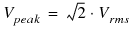
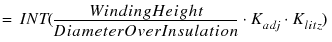

|
|
|||||||||
|
|
|
|
|
|
|
|
|
|
|
This chapter provides you an overview of the winding layout process. It also provides you an insight to the winding layout design steps that are completed by Magnetic Parts Editor. Topics included in this chapter are:
You now have the physical dimension of the winding wire and the number of turns for both primary and secondary windings. For winding layout, you need to compute the transformer properties listed below.
To successfully perform the tasks listed above, Magnetic Parts Editor needs appropriate information in form of inputs. Some of the these inputs are provided by you, for rest of the parameters, Magnetic Parts Editor reads the values from the database.
|
Operating flux density (B) |
User or calculated by Magnetic Parts Editor |
||
|
Primary Voltage (Vp) |
|||
|
Core cross-section area (Ae) |
Magnetic Parts Editor database |
Insulation Breakdown voltage (per unit length) |
Magnetic Parts Editor database |
End insulation is the insulation used between the core and the winding. The thickness for the end insulation depends on two factors, the peak voltage in the winding and the breakdown voltage of the insulation material.
For end insulation, you need to know the following.
To compute the required insulation thickness, divide the peak winding voltage by the breakdown voltage of the insulation material used.
(3-1) 
Note: For a sine wave power transformer, the peak voltage can be calculated from the rms voltage using the equation, .
The breakdown voltage of an insulator is the maximum voltage per unit length that the insulator can withstand. For the selected insulation material, this value is available in the Magnetic Parts Editor database
Commercially, each insulation material is available in form of sheets of fixed thickness. You can use multiple insulation sheets in parallel, To achieve the required insulation thickness.
What should be the end insulation for the primary winding of a sine wave power transformer, that uses Nylon as the insulation material and Input Voltage as 1KV.
|
|
To get a solution for the above scenario, we will refer the entries in the Magnetic Parts Editor database to obtain the properties of the insulation material used. |
For the given input, the maximum voltage across the primary winding is Vppeak.
From the Magnetic Parts Editor database, the breakdown voltage of nylon is 700 V/mm and it is commercially available as sheets of 0.2 mm, 0.5 mm and 1mm.
Therefore, required insulation thickness is:
This can be realized by using 11 sheets of 0.2mm in parallel, or by using 5 sheets of 0.5mm in parallel, or by using 3 sheets of 1mm in parallel. Of these, the nearest combination is using 11 sheets of .2mm in parallel. Therefore, the effective insulation thickness between core and winding is (11*0.2) 2.2mm.
Having calculated the number of turns in the primary winding and in the secondary winding, the next step is to find out the number of layers required to accommodate these windings.
To arrive at the number of layers required for the primary and secondary windings, Magnetic Parts Editor follows the steps listed below.
The winding height, Hwdg, is the space available for the transformer windings. See Figure 3-1.
|
|

|
Winding area in influenced by the shape of the core and bobbin. |
For Figure 3-1 , winding area is calculate using the equation given below.
Number of winding turns that can be accommodated in a single layer is calculated using the formula given below.
(3-2) Turns/layer

where
|
Kadj |
= 0.95 if turns/layer >= 50 = 0.9 if 10< turns/layer < 50 = 0.85 if turns/layer = < 10 |
|
Klitz |
= 1 for single wire = (1/number of strands) for multiple wires in parallel |
|
|

|
For Litz type wires, DiameterOverInsulation is the product of diameter of the wire including insulation and the number of strands in the litz wire. |
|
|
|
The INT function used in Equation 3-2 returns an integer value that is nearest to and smaller than the parameter value. For example, if the calculated number of turns per layer is 9.7, the value returned by the INT() would be 9. This is so because in real world we cannot have fractional turns in a layer. Therefore, the maximum turns per layer will be an integer value less than the calculated value. |
To obtain total number of winding layers, divide the number of turns in the winding, calculated in section, Turns per winding, by the number of turns per layer, calculated in the Turns per layer section.
Therefore, for the primary winding,
(3-3) Number of layers = Np/turns per layer for primary
Similarly, for secondary winding,
(3-4) Number of layers = Ns/turns per layer for secondary
Having decided the number of winding layers for the primary and the secondary winding, you also need to finalize on the thickness of insulation material to be used between two consecutive winding layers. The insulation thickness between two consecutive layers is effected by the voltage buildup between two layers. Voltage buildup can be defined as the maximum possible voltage difference between two winding layers.
For example, for a sine wave power transformer, voltage build up is calculated as:
As in case of end insulation, here also the required insulation thickness is obtained by dividing the voltage buildup by the breakdown voltage of the insulator.
The final step in designing the winding layout is to calculated the winding buildup. Winding buildup is the total height of the winding layers, obtained after the winding layout is complete. For the success for the design process, winding buildup must be less than the available window height, Hwdg, calculated in the section Window height .
For example, for an EE core, winding buildup is calculated as,
|
NL |
||
|
Insulated, Dw |
||
This chapter introduced you to the factors that influence the winding layout in a transformer. Table 3-1 lists the winding layout parameters, along with the links to the equations used by the Magnetic Parts Editor to calculate these parameter values. The values computed by Magnetic Parts Editor are displayed at appropriated columns in the Manufacturer Report.
|
Calculated using.. |
Calculated using.. |
||
|
Number of layers for primary |
Number of layers for secondary |
||